Setup and operation
Complete Bridge guide
This guide starts with an unpowered bare board and ends with learned infrared profiles, per-zone routing, backup and signed online updates managed by RoonPilot.
1. What the Bridge does
RoonPilot IR Bridge is an optional ESP32-S3 companion for equipment that Roon cannot control directly. RoonPilot remains the user interface; the Bridge receives authenticated volume, mute and power actions and emits the learned commands of the original infrared remote.
Routing is selected per Roon zone. One zone can use native Roon volume, a second can control a DAC through infrared, and another can deliberately have volume control disabled. Disabling Bridge & Bluetooth turns off Bridge scanning, Bluetooth and all Bridge background work after RoonPilot restarts.
The complete Bridge interface follows RoonPilot's global English/German setting. Physical identities and user-defined zone, equipment and profile names remain exactly as entered.
There is no second product to administer.
RoonPilot manages the Bridge master switch, encrypted BLE scan and pairing, optional Wi-Fi provisioning, live transport health, IR profiles, guided learning, command tests, per-zone routing, on-screen Power/Mute controls, a combined setup backup and signed online updates. The Bridge itself has no cloud account or everyday web interface.
2. Hardware and safe wiring
The validated build uses the Waveshare ESP32-S3-Zero with 4 MB flash and 2 MB PSRAM, an AZ-Delivery KY-022/CHQ1838 receiver, the Adafruit High Power Infrared LED Emitter 5639 and USB power.
S, +, −, V+, GND and SIG labels on your delivered modules. Compatible KY-022 boards do not always expose their pins in the same physical order.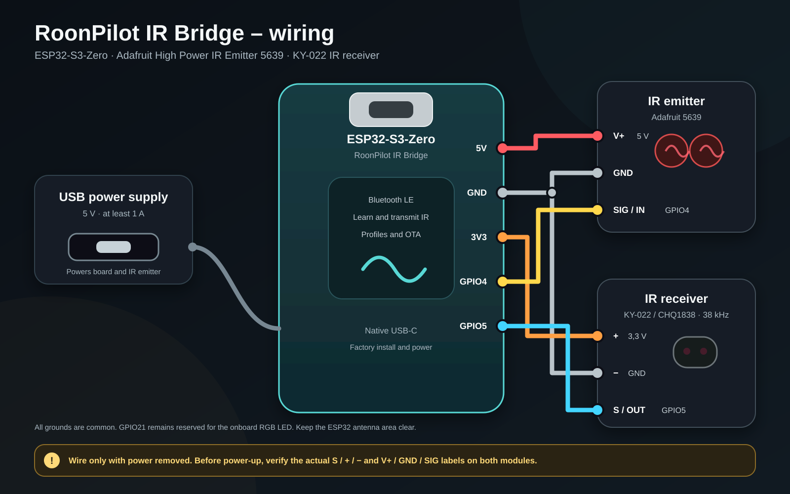
| Bridge connection | Destination | Purpose |
|---|---|---|
| 5 V | Adafruit 5639 V+ | High-power emitter supply from USB, not from the 3.3 V regulator |
| GPIO4 | Transmitter SIG / S | 3.3 V IR modulation signal |
| 3V3 | KY-022 + | Keeps its digital output inside the ESP32 input domain |
| GPIO5 | KY-022 S / OUT | Demodulated IR receive signal |
| GND | Both modules | Mandatory common ground |
The Adafruit board contains its own transistor driver and accepts 3–5 V power and a 3–5 V logic input. At 5 V its two LEDs can draw roughly 400 mA in total while pulsing, so use a stable 5 V / 1 A or better USB supply and never drive the LEDs directly from a GPIO. Keep its bursts short and keep the ESP32 ceramic antenna clear of modules, wiring and metal.
Printable Bridge enclosure
The project includes a printable body, lid, IR-emitter cover and two alternative foot lengths. Use one complete set of four equal feet. The photographs show the tested external and internal arrangement; they do not replace electrical inspection.


 Bridge_Cube.stlMain enclosure · print once
Bridge_Cube.stlMain enclosure · print once
 deckel.stlLid · print once
deckel.stlLid · print once
 ir_sender_kappe.stlEmitter cover · print once
ir_sender_kappe.stlEmitter cover · print once
 fuss_1x_drucken_4x.stlLonger foot for a long USB-C plug · print four
fuss_1x_drucken_4x.stlLonger foot for a long USB-C plug · print four
 fuss_1x_drucken_4x_KURZ.stlShort foot for a compact USB-C plug · print four
fuss_1x_drucken_4x_KURZ.stlShort foot for a compact USB-C plug · print four
Complete the wiring and supervised open-board tests before closing the housing. Use a USB-C cable with a short connector housing whenever possible; if its plug is still too long, install four copies of the longer fuss_1x_drucken_4x.stl foot. Disconnect USB before fitting the lid, align the Adafruit emitter and optional learning receiver with their openings, keep wires free of the antenna and contacts, then repeat IR range and temperature checks on the closed enclosure. The separate print and enclosure guide contains the full assembly outline and model dimensions.
Bridge status LED colours
The small RGB LED is on the ESP32-S3-Zero. It is off during normal operation. Use RoonPilot's Bridge page for ongoing connection status; a dark LED does not mean the Bridge is powered off or disconnected.
| LED pattern | Meaning |
|---|---|
| Slowly pulsing blue | A pairing window is open. |
| Two short blue flashes | Encrypted Bluetooth pairing succeeded. |
| Repeated short blue pulses for about 1.5 seconds | Identify Bridge was requested in RoonPilot. |
| Pulsing orange | The Bridge is waiting for or recording an IR signal during learning. |
| Two short green flashes | Two matching IR captures were stored. After pulsing violet: firmware accepted; restart follows. |
| Two short red flashes | IR learning failed or timed out. After pulsing violet: firmware transfer or verification failed. |
| Pulsing violet | Firmware is being transferred or verified. Do not remove power. |
After a short confirmation the LED turns off again or resumes showing an open pairing window. Cancelling IR learning ends the orange pattern without a red error signal.
3. First Factory installation
- Complete and inspect the wiring with USB disconnected. For the very first board test, disconnect the IR modules if their pin labels are not yet certain.
- After it is published, open the Bridge browser installer in a current desktop Chrome or Edge. Firefox, Safari, iPhone and iPad cannot use the required Web Serial interface.
- Connect the Bridge board directly by USB. Close Arduino Serial Monitor, ESP-IDF Monitor and every other program using the port.
- In the Web Installer device chooser, select USB JTAG/serial debug unit (
COM…) on Windows or USB JTAG/serial debug unit (cu.usbmodem…) on macOS. The name before the parentheses is what matters. No operating-system lookup is required first; the open chooser immediately detects a device after it is disconnected and reconnected. USB serial denotes a classic ESP32 there and is not the Bridge. Keep only the Bridge connected by USB during installation. - Accept both safety confirmations and start the installer. Keep USB connected until installation and restart have completed.
After a successful Factory installation, the Bridge creates a new random identity in the form RPB-XXXX-XXX and permits its first encrypted pairing. The RGB LED slowly pulses blue while pairing is open.
4. Pair the Bridge with RoonPilot
- Open RoonPilot’s local web interface and select IR Bridge.
- Enable Bridge & Bluetooth, save and allow RoonPilot to restart. When disabled, no Bridge Bluetooth stack is started.
- Select Scan for Bridges. Compare the displayed
RPB-…identity with the Bridge you intend to control. - Select that identity and confirm pairing in RoonPilot. Do not pair an unknown nearby device.
- Wait for Encrypted and bonded, the installed Bridge version and Ready. Two short blue LED flashes confirm success; the LED then switches off.
- Run Test connection before learning profiles.
No accessible BOOT button is required for everyday pairing. If one side later loses its bond, power-cycle the Bridge three times within 15 seconds. The Bridge removes only its bond and opens pairing for five minutes; its identity and IR profiles remain intact.
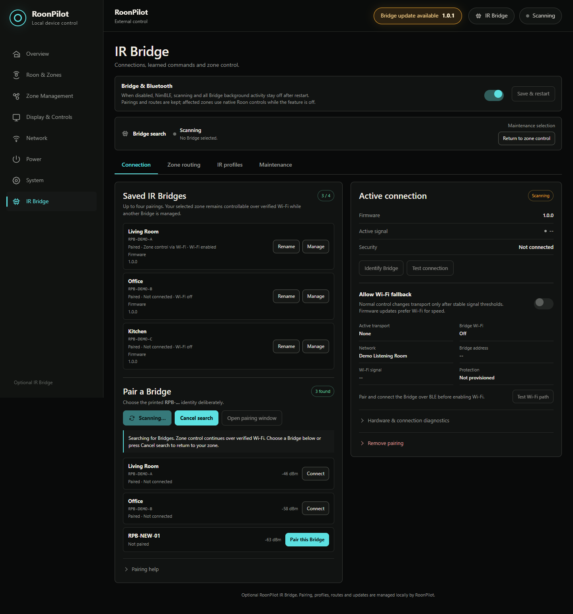
Saved is not the same as found
Saved IR Bridges is the persistent inventory of up to four pairings. Pair a Bridge contains only units heard during the last ten-second BLE scan. “1 found” can therefore correctly appear beside “2 / 4” saved. When a unit returns to BLE range, press Scan for Bridges again. Absence from the last discovery list erases neither pairing nor Wi-Fi control.
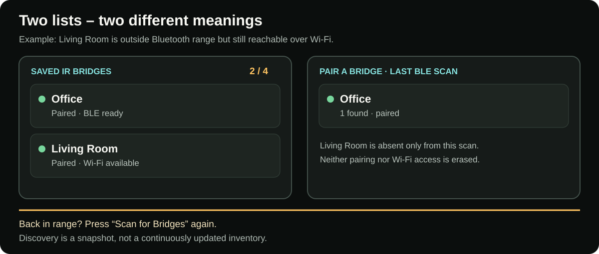

Automatic zone control and Manage
The selected Roon zone always determines the required IR routes. For a group, this includes every assigned Bridge of its physical members. Manage opens a different saved Bridge only for maintenance, learning, diagnostics or update; it never changes a zone route. There is at most one BLE link but multiple separately authenticated Wi-Fi paths. Before Manage or Scan takes the BLE link, RoonPilot verifies that active IR routes remain reachable and refuses an unsafe switch. Select Return to zone control afterwards; idle maintenance selection expires after five minutes.
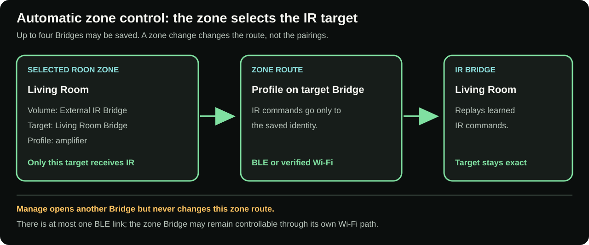
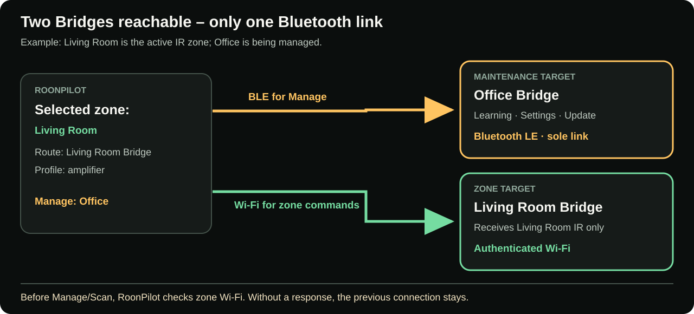

5. Optional Wi-Fi fallback
BLE remains the preferred link. If the Bridge must sit in another room, enable Allow Wi-Fi fallback while BLE is connected and bonded. RoonPilot then transfers its current 2.4 GHz credentials and a fresh 256-bit application key once through the encrypted BLE connection.
- Enable the switch and confirm provisioning.
- Wait for Connected and verified, the Bridge IP address and signal level.
- Use Test Wi-Fi path to force an authenticated Wi-Fi command even while BLE is available.
Commands use AES-256-GCM authentication and replay protection. A retry cannot silently produce a second IR action. Failed credentials are not retained, BLE remains the recovery path, and disabling fallback prevents the Bridge Wi-Fi radio from starting after reboot. RoonPilot and Bridge must be on the same local network without client isolation.
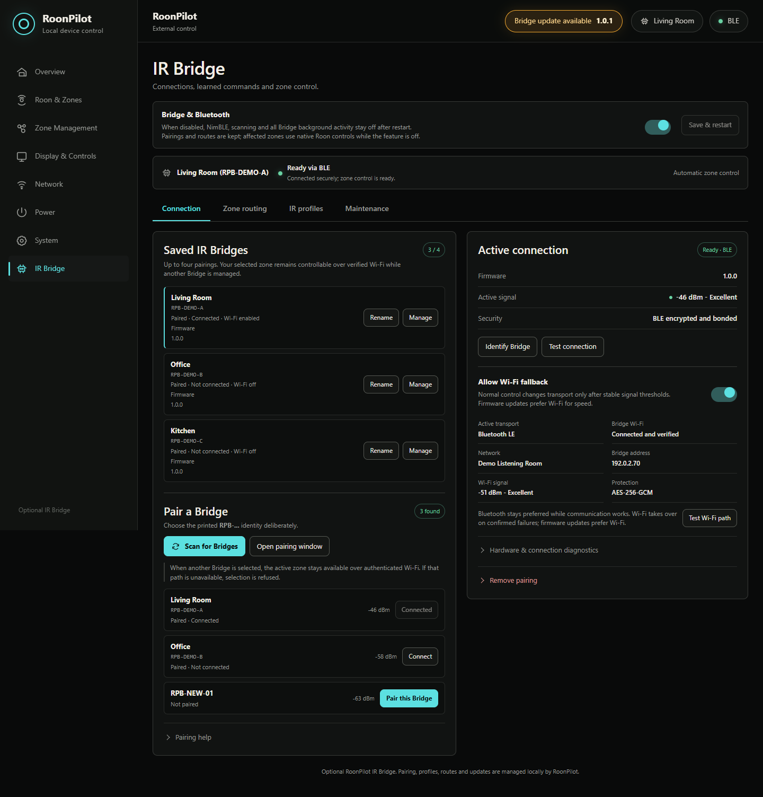
A fluctuating dBm reading alone does not trigger a handover. RoonPilot keeps a working path stable, changes to provisioned Wi-Fi only after repeatedly confirmed trouble and does not immediately switch back when BLE range returns. An IR command with an uncertain outcome is not blindly replayed.
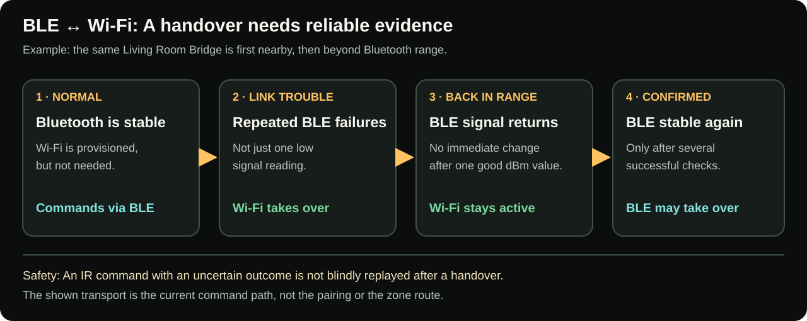

6. Create and learn an IR profile
With multiple Bridges, only one needs an IR receiver. This learning Bridge can capture profiles for every zone. RoonPilot stores them independently of that Bridge and deploys them to the chosen target Bridge when you save a zone route, even if the target has no receiver.
- Under IR profiles, create a uniquely named profile such as
RME ADI-2 DACand save it on RoonPilot. No Bridge is needed yet. Keep the usual 38 kHz carrier and 33% duty unless the equipment requires something else. - Select that profile and any learning Bridge with an IR receiver. It need not be the eventual target Bridge. Learning reserves it so it cannot send normal IR commands until learning ends.
- Choose Learn beside Volume up. The learning Bridge LED pulses orange while it waits.
- Aim the original remote at the KY-022 and press the requested key once, briefly and cleanly.
- Repeat the same press when requested. The Bridge accepts only matching captures.
- Two short green flashes mean that the command was analysed and stored; two red flashes mean timeout, mismatch or failure.
- Learn the remaining required buttons and use Save on RoonPilot to commit the confirmed commands to its persistent library. Discard learning leaves the library profile unchanged. Test the real equipment only after learning has ended and the zone route has deployed the profile; normal IR sends are blocked during learning. An unfinished learning session expires automatically after at most ten minutes.
Known NEC and Extended NEC signals retain protocol and repeat information; unknown signals remain available as lossless raw timing. Duty is the on-time percentage of each carrier cycle—not press duration and not the number of repeats. The 33% default means that a 38 kHz LED carrier is on for roughly 8.7 µs of each 26.3 µs cycle.
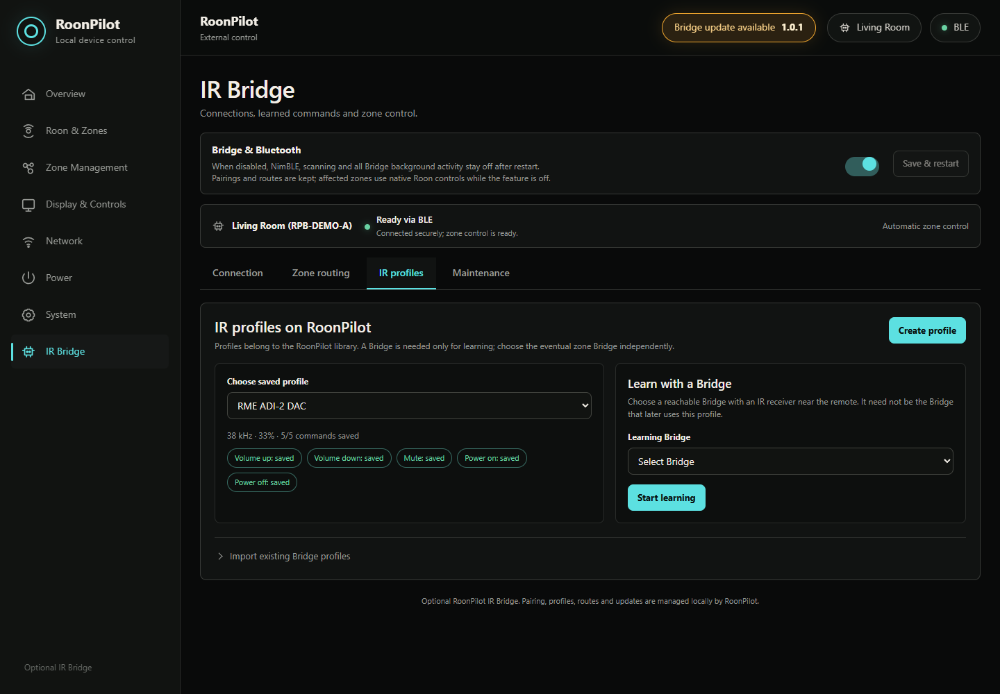
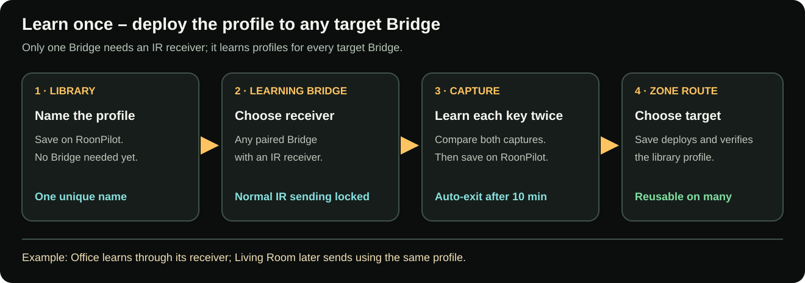

7. Route each zone
Open Zone Management and choose one volume path for every visible zone:
- Roon / endpoint volume sends the endpoint’s native absolute or dB volume command.
- External IR Bridge sends Volume up/down from the selected profile.
- Disabled deliberately discards volume actions.
Set the encoder step count separately for every zone. 2 Steps means two complete learned IR button presses for each RoonPilot detent. It does not mean one artificially held command. On the validated RME profile, two physical 0.5 dB increments therefore produce exactly one 1.0 dB RoonPilot detent.
Mute and Power can also be enabled per zone. Play/Pause, Previous and Next remain native Roon actions. Because incremental infrared does not report an absolute value, the display shows a relative + / − action counter instead of inventing a volume number.
For External IR Bridge, select a paired Bridge and a named profile from RoonPilot's library. Save automatically transfers and verifies that profile on the target Bridge before activating the route. The same library profile can be assigned to several Bridges; their numeric profile slots are independent.
Roon groups and several Bridges
A selected Roon group does not replace its members' saved routes. RoonPilot resolves every physical output and may therefore send native numeric volume, native dB volume, relative Roon commands and IR commands through several Bridges during the same ring movement. All Bridges required by the group are monitored; one unreachable Bridge marks only its own member OFFLINE and never causes a silent fallback to another profile.
The first ring detent opens the on-device group mixer without changing volume. Further turning controls the complete group. Tap one of the large member rows to adjust only that output, or tap the group heading to return to all members. The round display offers up to three individually selectable rows; whole-group turning still processes every eligible output.
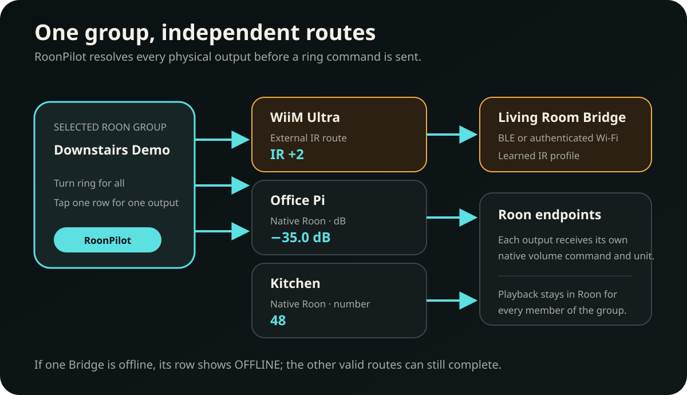

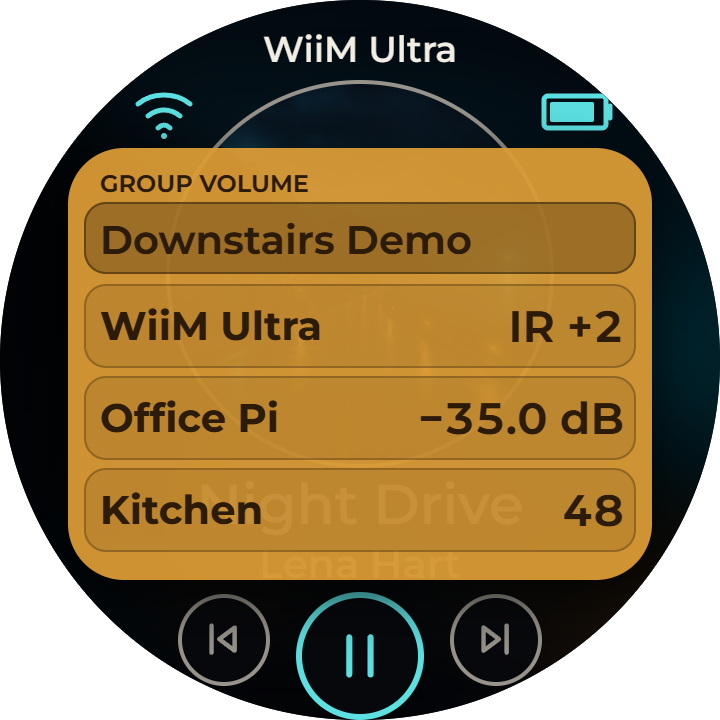
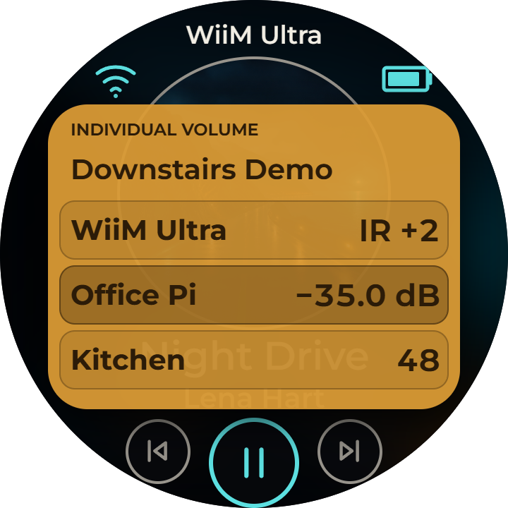
When several members use the same physical Bridge, RoonPilot deliberately sends one IR action per detent to that Bridge rather than duplicating it. Use independent Bridges for independent IR targets. See the complete Roon group and group-mixer guide for mixed units, display limits, failure handling and a worked example.
Music transport still goes through Roon and WiiM. Only volume, mute and power are routed to the Bridge, so the RME performs the analogue/hardware level change itself. This preserves the DAC’s Auto Ref Level behaviour and avoids substituting Roon digital attenuation for the RME volume control.
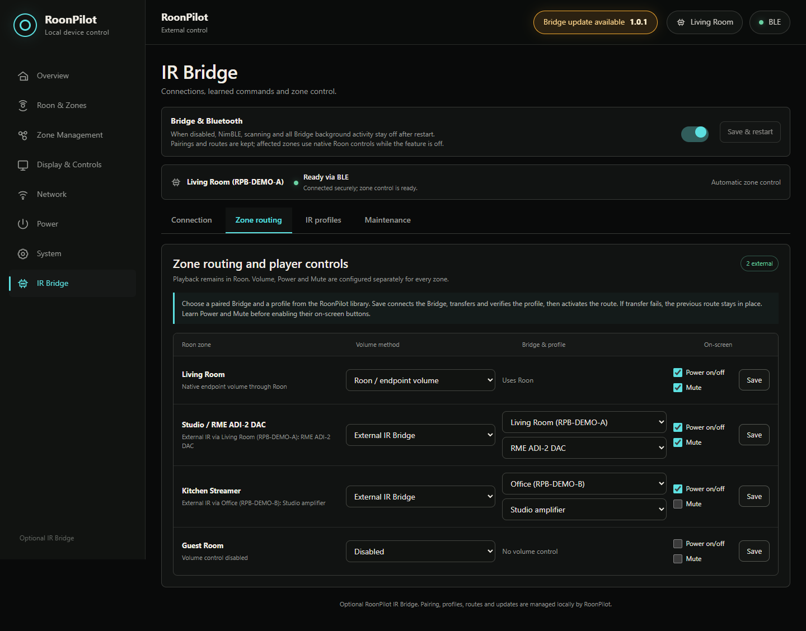
8. Back up and restore the setup
After learning and testing IR commands, open System → Configuration backup and select Create Backup. One JSON file contains RoonPilot settings, zone routes, HTTP Power actions, each named IR profile once and separate assignments to Bridges. The learned pulse data has checksums. Profiles also persist in a RoonPilot-side library.
Creating a backup reads the permanent profile library on RoonPilot, not the live Bridges. An offline Bridge therefore neither delays the download nor makes the file partial. Changes that have not yet synchronized from a Bridge may be absent. A known older Bridge copy produces a warning; the library version remains authoritative.
Wi-Fi credentials, transport keys, BLE bonds and other secrets are excluded. After Factory installation or board replacement, pair the Bridge again and choose it in the restore dialog. One profile can be transferred to several Bridges, with a new local profile ID on each. Zone routes require an explicit target and never assume the old numeric ID is still valid. See the backup and restore guide.
An offline Bridge does not abort restore. RoonPilot restores its settings and profile library, continues with available Bridges and lists unconfirmed transfers for later completion. An IR route without a verified current assignment stays unchanged. When the Bridge is reachable again, repeat the import or transfer the restored library profile and save the affected route.
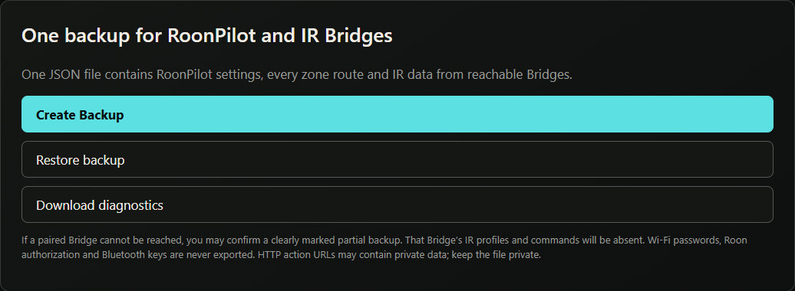
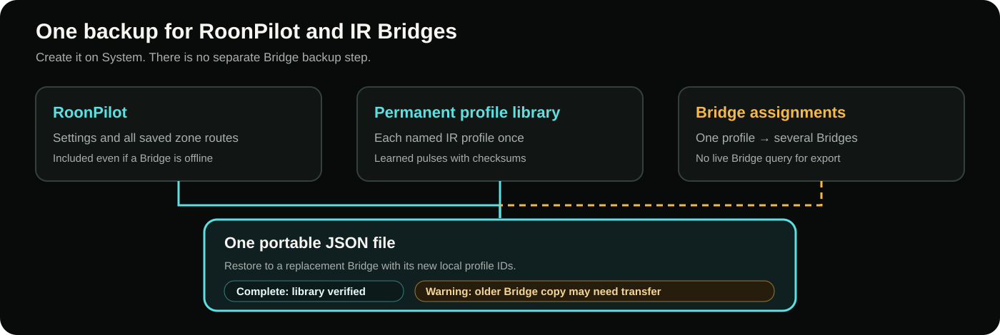
9. Signed online updates
After the first Factory installation, normal Bridge updates are managed from RoonPilot’s IR Bridge → Bridge firmware update card—no USB access and no local BIN selection are normally required.
- When the Bridge feature is enabled, RoonPilot may check the HTTPS manifest after startup and at most once every 24 hours. Update checking and the once-per-day device notice are separate settings.
- The page shows installed and available Bridge versions. A visible status-bar notice links directly to the update card; the device notice is dismissible and waits until important interaction has finished.
- Installation never starts automatically. Select Download and install and confirm it explicitly.
- RoonPilot validates channel, project, board, protocol range, required controller version, size, SHA-256, ESP32-S3 target and embedded version before transfer.
- Authenticated Wi-Fi is preferred for the transfer. If normal Bridge Wi-Fi is off but BLE is bonded, RoonPilot may provision and enable Wi-Fi temporarily, transfer the image and restore the previous off state after the Bridge reconnects. Encrypted BLE remains the slower recovery path when Wi-Fi cannot be used.
- The Bridge independently checks order, size, SHA-256 and its RSA-3072 signature before activating the inactive A/B partition.
- Success is reported only after the Bridge reconnects and reports the requested version. ESP-IDF rollback remains available if the new application cannot confirm its start.
If Bridge & Bluetooth is disabled, RoonPilot performs no Bridge scan, update request, web notice or display notice. The normal RoonPilot firmware update channel remains independent.
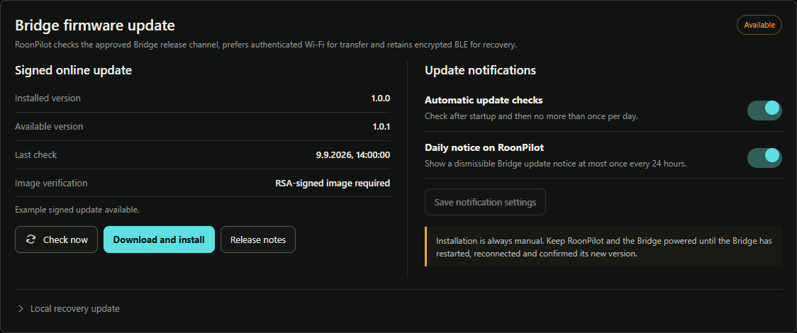
10. Troubleshooting
No serial device in the installer
Use a data-capable cable, close serial monitors, connect directly without a hub, then hold BOOT while inserting USB and release it after the port appears.
Bridge is not found
Confirm Bridge & Bluetooth is enabled and saved. For a previously paired Bridge, use the three-power-cycle recovery and scan during the five-minute blue pairing window.
Learning times out
Check KY-022 pin labels, use 3.3 V, reduce sunlight, move the original remote closer and use two clean presses of equal length.
Wrong volume increment
First verify one learned command with Test. Then check the zone’s independent step count; do not compensate for a bad recording with a larger number.
Wi-Fi fallback does not connect
Provision while BLE is bonded, use 2.4 GHz, keep both devices on the same LAN and disable AP/client isolation. BLE must remain available after a failed first test.
An update is not offered
Check that the Bridge feature and Bridge update check are enabled, then use the manual check on the update card. An older unsigned test build may first require a wired migration.
Build your own Bridge step by step